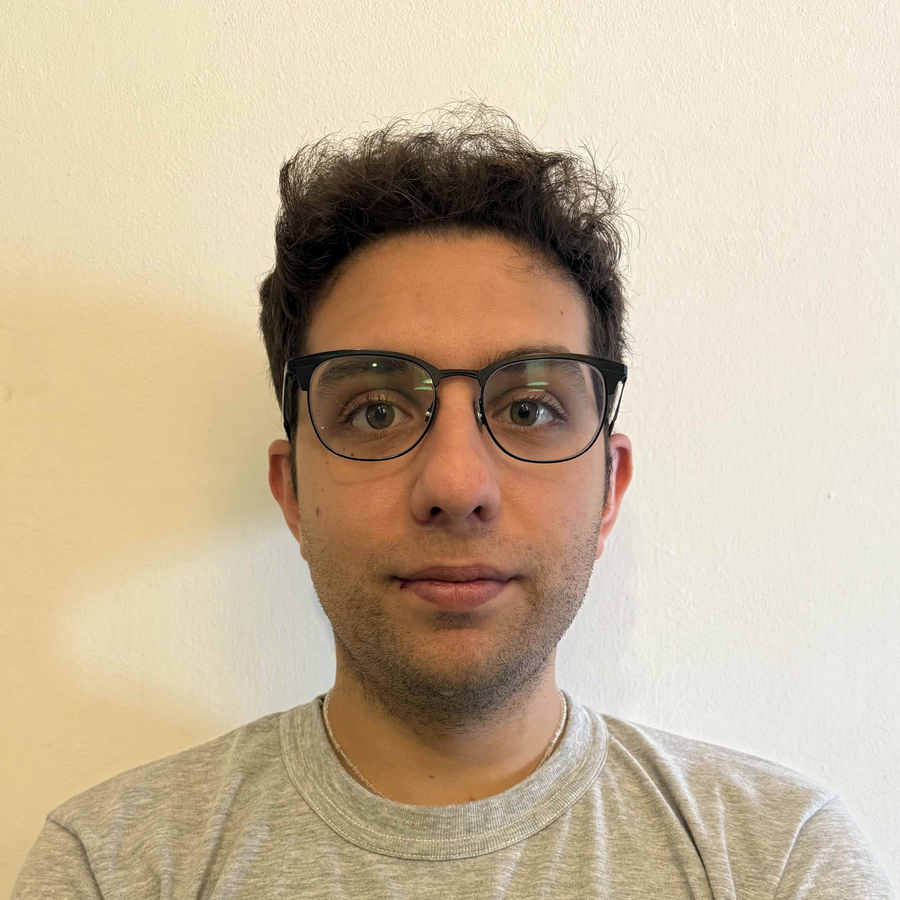

Sobre mi
Mi foto
Nombre
Franco Leonardi
Carrera
Lic. en Gestión de Tecnologías de la Información/p>
Introducción
Actualmente me desempeño como Project Manager en una empresa de desarrollo de software.
Cuento con 5 años de experiencia en desarrollo de software, principalmente en backends .NET.
Decidí iniciar mis estudios nuevamente en UADE, luego de haber estudiado 3 años en UTN. La carrera de Lic. en Gestión de Tecnologías de la Información en modalidad virtual me va a permitir terminar mis estudios de una forma compatible con mi trabajo.
¡Estoy ansioso de aprender y conocer más sobre el mundo del software y las tecnologías!